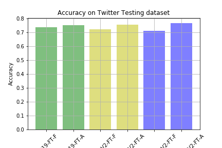

Table of Contents
1 Introduction
I tried to replicate the results in the paper, Cross-Media Learning for Image Sentiment Analysis in the Wild by Lucia Vadicamo et al. Here we train an image classifier to classify images as having positive, negative or neutral sentiment. A novel approach is used where no supervised labeling of data is necessary, instead the sentiment of the image is got from the text accacompanying the image in the tweet. The dataset is available from their site http://www.t4sa.it/. The B-T4SA dataset is used which contains a balanced number of positive, neutral and negative images. The dataset is 63GB in size and contains 156,862 for each category resulting in a total of 470,586 images.
2 Method
The first step is preprocessing the images so, that it can be read quickly of the disk. Reading 63GB of image data and converting in to a tensor for an epoch is a time consuming process. I found that transforming the images into tensors and saving it to disk helps in avoiding the transformation cost across different runs. The data is saved in bcolz format, which is a disk backed datastructure similar to dataframe. It helped keeping the code to read data simple and offered fast read performance.
The method given in the paper is followed to replicate its results. The paper uses caffe, I did the experiment in Keras which was thought in the class. The VGG19 model in Keras is not similar to the caffe implementation. It was altered by adding l2 regularizers to all conv layers to support l2weight decay similar to caffe.
Two version of the VGG19 model are finetuned. In one instance all the layers are freezed except for the bottleneck layers and is called VGG19-FT-F. This is finetuned for 15 epochs using SGD with a lr rate of 1e-3. The learning rate is reduced by a factor of 10 once every 5 epochs to stop divergence of result. A batch size of 64 is used while training, this is opposed to the batch size of 32 used in the paper. I found that they use batch accumulation of 2 to lower GPU footprint. So, in effect it is equivalent to using a batch size of 64. My GPU could handle a batch size of 64 and I didn't had to make use of special techniques like batch accumulation to fit it in memory.
In the second instance all layers of the model are finetuned and this is called VGG19-FT-A. This is also trained for 15 epochs using SGD with a lr of 1e-3. The batch size was however reduced to 48 to fit the model in memory.
Inaddition to the two instances of the VGG19 model, other types of models were also evaluated. I had experimented with MobilenetV2 and InceptionResnetV2 architechtures. Two models are constructed for mobilenet namely MobilenetV2-FT-F and MobilenetV2-FT-A in which only the bottleneck layers and all layers are trained respectively. Similarly two models are constructed based on InceptionResnetV2 namely InceptionResnetV2-FT-F and InceptionResnetV2-FT-A, where the bottleneck layers and all layers are trained respectively. These 4 models are also finetuned similar to the VGG19 model for 15 epochs using SGD with a lr of 1e-3 and a batch size of 64 for *-FT-F models and 48 for *-FT-A models
3 Result
I was able to replicate the result given in the paper. I got an accuracy of 0.5042 with VGG19-FT-F and 0.5102 with VGG19-FT-A which is similar to the accuracy of 0.506 and 0.513 as reported in the paper The more complex models didn't improved much on the accuracy. The MobilenetV2-FT-F got an accuracy of 0.4816 while the MobilenetV2-FT-A got an accuracy of 0.5108. The inceptionresnet based model did slightly worse with InceptionResnetV2-FT-F getting 0.4727 and InceptionResnetV2-FT-A getting 0.5078. This is summarized in the following table and graph
Table 1 : Accuracy of models on T4SA test set
| Model | Accuracy |
|---|---|
| VGG19-FT-F | 0.5042 |
| VGG19-FT-A | 0.5102 |
| MobilenetV2-FT-F | 0.4816 |
| MobilenetV2-FT-A | 0.5108 |
| InceptionResnetV2-FT-F | 0.4727 |
| InceptionResnetV2-FT-A | 0.5078 |
Here is the graph of the result

The accuracies of the models on the Twitter Training Dataset is also measured. Here we can see that the more complex models like InceptionResnetV2-FT-A gives a better performance compared to less complex models like VGG19-FT-A and MobilenetV2-FT-A. We can also observe that the model fine tuned on all layers were able to catch the patterns in the data better compared to the models that are finetuned only on the fully connected layers The results are summarized in the following table and graph
Table 2 : Accuracy of models on Twitter Testing dataset
| Model | Accuracy |
|---|---|
| VGG19-FT-F | 0.740363 |
| VGG19-FT-A | 0.755102 |
| MobilenetV2-FT-F | 0.722222 |
| MobilenetV2-FT-A | 0.757370 |
| InceptionResnetV2-FT-F | 0.714286 |
| InceptionResnetV2-FT-A | 0.768707 |

The training time and inference time are also important factors in determining the usefulness of a machine learning model in a constrained environment. Most real world uses care about the training time and even more important is the inference time. Training time is calculated on the GPU while the inference time is calculated on the CPU. This is because most of the time training is done on a machine with a powerful GPU and the trained model is usually deployed on webservers which supports only CPUs. The trained models are also deployed on less powerful devices like mobile phones so, the inference performance is calculated on CPU only system.
The models are trained for 15 epochs with EarlyStopping callback with a patience of 5. So, if the validation loss doesn't improve for 5 consecutive epochs then the training is stopped even before the completion of 15 epochs. The time is calculated as a ratio relative to the quickest model to train. This is to account for difference in the computing infrastructure and make meaningful comparision between models We can see that the InceptionResnetV2 is the fastest to train. It converged quickly and got stopped early since there is not much improvement in the later epochs. We can also observe that models where all layers are trained converge quickly than training only fully connected layers
Here is the table and graph of the result
Table 3 : Training time of models with T4SA training data.
| Model | Relative Training Time | Actual Training Time in hours |
|---|---|---|
| VGG19-FT-F | 2.316 | 178005 |
| VGG19-FT-A | 1.098 | 84405 |
| MobilenetV2-FT-F | 2.692 | 206839 |
| MobilenetV2-FT-A | 2.0 | 153675 |
| InceptionResnetV2-FT-F | 2.004 | 153977 |
| InceptionResnetV2-FT-A | 1.0 | 76846 |

The inference time is calculated by running the models on a subset of twitter training data. Inference time is calculated on the CPU since the models will be usually deployed on a webserver which has only CPU.
Here is the table and graph of the result
Table 4: Average Inference time of models on Twitter Test data
| Model | Average Inference Time (15 images) (S) | Standard Deviation (mS) |
|---|---|---|
| VGG19-FT-F | 10.4 | 14.2 |
| VGG19-FT-A | 10.4 | 45.8 |
| MobilenetV2-FT-F | 1.78 | 22.5 |
| MobilenetV2-FT-A | 1.78 | 12.7 |
| InceptionResnetV2-FT-F | 5.25 | 10.5 |
| InceptionResnetV2-FT-A | 5.26 | 30.0 |
We see that MobilenetV2 has the quickest test time followed by InceptionResnetV2 and VGG19 models. If are looking for a model that is quick with acceptable accuracy MobilenetV2 model is the way to go.
In addition to the training time, inference time and the accuracy of the models we should also consider the resource required to train the models. Here the memory usage and CPU usage of the models are compared against one another. We use a relative comparision here since the actual numbers will depend on the actual hardware that is used and we are interested only the relative ease with which the models can be trained.
Here is the table and graph for CPU usage
Table 5: Average Relative CPU load while training on T4SA training data
| Model | Average Relative Load |
|---|---|
| VGG19-FT-F | 1.0 |
| VGG19-FT-A | 1.705 |
| MobilenetV2-FT-F | 1.124 |
| MobilenetV2-FT-A | 1.281 |
| InceptionResnetV2-FT-F | 1.194 |
| InceptionResnetV2-FT-A | 2.775 |

We can see that InceptionResnetV2 models are high on CPU load while the MobilenetV2 has the least CPU load and the VGG19 models are inbetween.
Here is the table and graph for vsize usage
Table 6: Average Relative vsize while training on T4SA training data
| Model | Average Relative Memory Usage |
|---|---|
| VGG19-FT-F | 1.354 |
| VGG19-FT-A | 1.364 |
| MobilenetV2-FT-F | 1.0 |
| MobilenetV2-FT-A | 1.301 |
| InceptionResnetV2-FT-F | 1.04 |
| InceptionResnetV2-FT-A | 1.369 |

We can see that MobilenetV2 models has less memory demand followed by InceptionResnetV2, while the VGG19 models places a heavy demand on memory
Finally we also measure and compare the memory footprint of the trained and saved models. Memory footprint plays an important role since the model has to be loaded into memory when deployed. It determines the memory usage and subsequently the cost of running the application since many cloud providers charge for infrastructure based on the memory requirement. It also determines the load time and scaling out time, a model with less memory footprint is quick to load and as a result easy to scale out. Smaller models are also preferred on mobile devices because of limited resources and low bandwidth connection. An app with a small apk size can be downloaded and used easily and can be updated frequently.
Here is the table and graph for memory footprint
Table 7: Memory footprint of models trained on T4SA training data
| Model | Size on disk in bytes |
|---|---|
| VGG19-FT-F | 1036656072 |
| VGG19-FT-A | 1116766456 |
| MobilenetV2-FT-F | 15544744 |
| MobilenetV2-FT-A | 28407960 |
| InceptionResnetV2-FT-F | 219423224 |
| InceptionResnetV2-FT-A | 436709216 |

4 Webapp
I created a webapp that can find the positive, neutral or negative sentiment of the uploaded image. The webapp can be run on a commodity webserver with no GPU. The software stack comprises of python with Flask framework for the backend and plain javascript along with Jquery is used for the frontend. The MobilenetV2 based model MobilenetV2-FT-A is used to make the decision in the application, MobilenetV2 based models are used since they are
- Light on resource usage (CPU and Memory)
- Fast inference time on CPU
- Small model footprint
5 Conclusion
We used the labeled data from the B-T4SA dataset to train our models ( VGG19-FT-F, VGG19-FT-A ). I was able to replicate the results from the experiment using the architecture described in the paper, these are set as baseline models.
I fine tuned two models based on InceptionResnetV2 and two on MobilenetV2 architectures trained on imagenet data. All these models are trained using the same training and validation data and tested against the test set from the downloaded B-T4SA dataset and TDD dataset found at DeepSent.
We then compared the new models performance to the baseline models and summarized the results in various such as
- Accuracy
- Training time
- Inference time
- CPU load
- Memory load
- Model Memory Footprint
We could see that the MobilenetV2 models achieved similar accuracy as the baseline models but has superior training and inference characteristics. The MobilenetV2-FT-A has a better accuracy compared to MobilenetV2-FT-F, but it falls behind slightly on other performance characteristics compared to MobilenetV2-FT-F model. We have to make a tradeoff here and the MobilenetV2-FT-A is selected for making the webapp, this is because the high accuracy and almost similar inference time as MobilenetV2-FT-F model. The MobilenetV2-FT-F model beat MobilenetV2-FT-A model in certain characteristics like Training time, CPU load, Memory load and Model Memory Footprint. But these are one time training cost and also the difference between MobilenetV2-FT-A and MobilenetV2-FT-F are not drastic as compared to other models, and they generally have the best performance characteristics of the three model types tested. I selected the MobilenetV2 based model MobilenetV2-FT-A for creating the webapp based on the results and observation we have.
The InceptionResnetV2 based models were also better than the baseline models but the MobilenetV2 based models are still better.
I created a sample webapp based on MobilenetV2-FT-A model. It is used to demonstrate deploying the model to a webserver as a microservice and I also created a basic frontend to interact with the service and label the uploaded image.
6 Future work
- Implement the solution with pytorch and try improving the accuracy, sample data from all three sections (train, test and valid) and test the upper limit on the accuracy that can be achieved on
this dataset
- Implement circular learning rate and varying cycle from fast.ai library and try to train it faster.
- Create a mobile app, deploy the model in mobile and check the framerate achieved, try to extend to find sentiment of scene from camera based on framerate reached.
7 References
- T4SA – http://www.t4sa.it/
- DeepSent – https://www.cs.rochester.edu/u/qyou/DeepSent/deepsentiment.html
- Cross-Media Learning for Image Sentiment Analysis in the Wild Lucia Vadicamo, Fabio Carrara, Andrea Cimino, Stefano Cresci, Felice Dell'Orletta, Fabrizio Falchi, Maurizio Tesconi link
- Quanzeng You, Jiebo Luo, Hailin Jin and Jianchao Yang, "Robust Image Sentiment Analysis using Progressively Trained and Domain Transferred Deep Networks", the Twenty-Ninth AAAI Conference on Artificial Intelligence (AAAI), Austin, TX, January 25-30, 2015.link
- fast.ai – https://github.com/fastai/fastai/